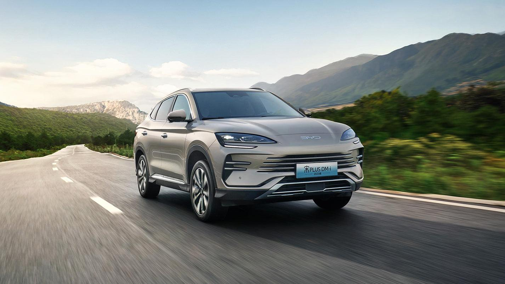
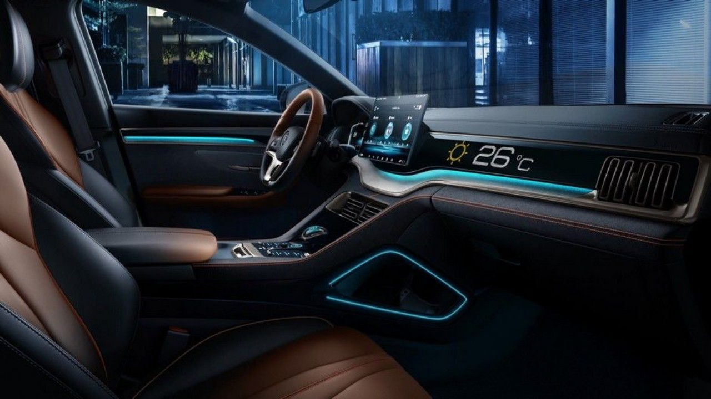

El BYD Song Plus es un SUV híbrido enchufable (PHEV) que combina un diseño moderno, tecnología avanzada y una excelente eficiencia energética. Gracias a su sistema híbrido, permite conducir utilizando energía eléctrica, combustible o una combinación de ambos, ofreciendo un equilibrio entre rendimiento y ahorro.
Desarrollado con la tecnología DM-i de BYD, el Song Plus brinda una conducción suave, silenciosa y de bajo consumo. En su interior destaca por su amplio espacio, pantalla táctil giratoria, conectividad inteligente y múltiples asistentes de seguridad, proporcionando comodidad y confianza en cada viaje.
Con su diseño elegante, equipamiento tecnológico y eficiencia, el BYD Song Plus es una excelente opción para quienes buscan un SUV versátil, ideal tanto para la ciudad como para viajes de larga distancia.

S/142,000